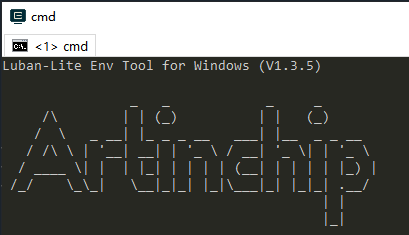
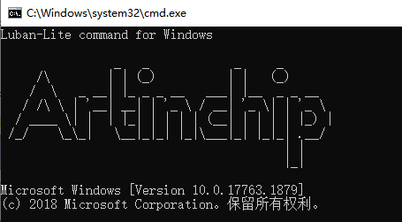

Windows
本节介绍了 Windows 环境下可以采用的编译方式，以及两个命令行工具的使用。
Luban-Lite SDK 采用了 Scons 作为编译框架的基础语言，Windows 环境中使用的工具存放在 luban-lite/tools/env/tools 目录中，不需要单独安装。
常规编译
- 工程加载
-
配置
在加载完工程配置后，使用 scons --menuconfig 命令来修改当前配置。
-
编译
使用 scons 命令进行编译。
编译成功的结果输出示例如下：Imagefile is generated: luban-lite/output/d21x_demo100-nand_rt-thread_helloworld/images/d21x_demo100_nand_page_2k_block_128k_v1.0.0.img编译后固件名称为 d21x_demo100_nand_page_2k_block_128k_v1.0.0.img
- 使用 scons --verbose 命令打印详细的编译信息。
-
使用 scons --clean 命令清理当前工程。
-
使用 ls 编译生成的目标文件：
ls output/$chip_$board_$kernel_$app/images/$soc.elf
OneStep
OneStep 是 ArtInChip 对 SCons 工具二次封装的总称，在基础命令上开发了一组更高效和方便的快捷命令， 以实现任意目录、一步即达的目的。在 CMD 或者 ENV 窗口启动后，OneStep 命令已经生效，可以从任意目录执行命令。关于 OneStep 命令的详细描述，可查看 OneStep 命令参考指南。
批处理文件
-
ENV 运行环境
直接双击 luban-lite/win_env.bat 打开 Windows 专有的 env 命令行工具，后面所有命令都在该命令行工具中进行操作。
ENV 是 RT-Thread 的原生工具，是 SDK 包中集成了编译所需要使用的所有的工具的一种使用方式
 -
CMD 运行环境
直接双击 luban-lite/win_cmd.bat 打开 Windows 的 CMD 命令行工具，后面所有命令的使用和 ENV 相同。
CMD 是 Windows 的使用环境，除了 SDK 的命令外，还可以使用系统自己安装的工具的命令，因此功能更强大。